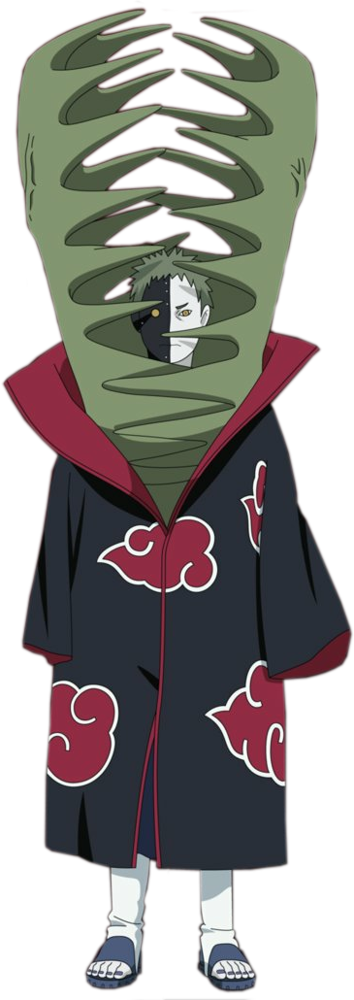
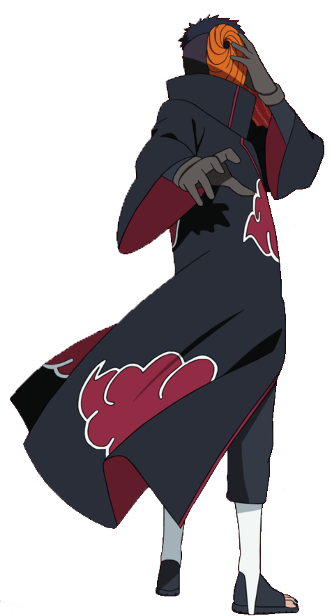
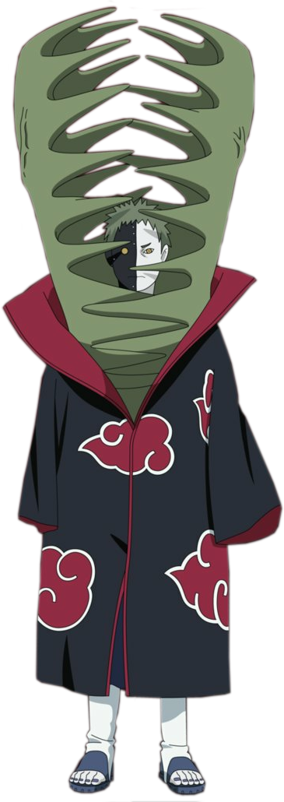
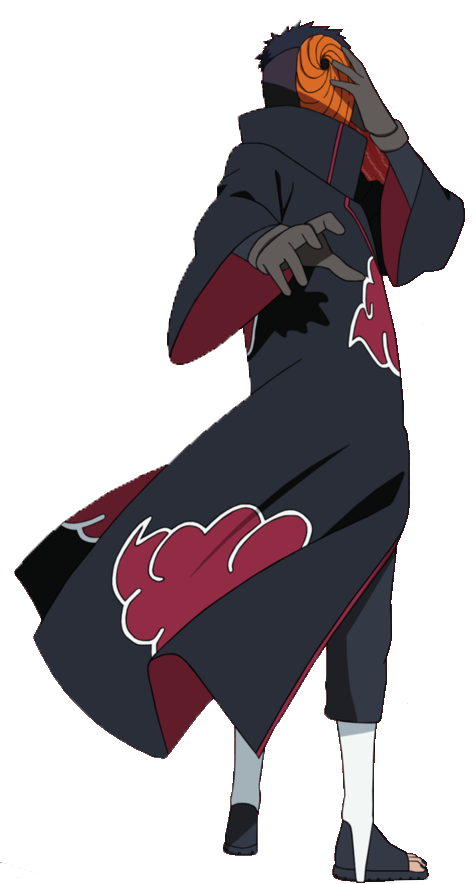

The Akatsuki
is now readyThe Akatsuki is a group of rogue ninjas in Naruto, known for their dark ambitions to capture the Tailed Beasts and reshape the world through violence and control.
The Akatsuki is a group of rogue ninjas in Naruto, known for their dark ambitions to capture the Tailed Beasts and reshape the world through violence and control.


 



The Akatsuki is a notorious organization in the Naruto series, made up of rogue ninjas with powerful abilities, aiming to control the world by capturing tailed beasts.
Nagato Uzumaki, also known as Pain, was a powerful shinobi from the Naruto series, a member of the Uzumaki clan, and the leader of the Akatsuki. He possessed the Rinnegan and sought peace through force and destruction.
Konan is a skilled kunoichi and member of the Akatsuki in Naruto. Known for her paper-based jutsu, she was Nagato's close ally and believed in his vision for peace.
Itachi Uchiha is a highly skilled shinobi from the Uchiha clan in Naruto, known for his intelligence and mastery of the Sharingan. Though initially seen as a villain for destroying his clan, it was later revealed that he acted to protect his village, making him a complex and tragic character.
Hidan is a member of the Akatsuki in Naruto, known for his immortality and devotion to the god Jashin. His ritualistic fighting style involves inflicting pain on himself to harm his opponents, making him a deadly and unpredictable fighter.
Deidara is a member of the Akatsuki in Naruto, known for his explosive clay jutsu and artistic philosophy of "art is an explosion." A skilled explosives expert, he uses his clay creations for both combat and artistic expression. Deidara is characterized by his playful personality and rivalry with Sasuke Uchiha.
Kisame Hoshigaki is a powerful Akatsuki member in Naruto, known for his shark-like appearance, mastery of water jutsu, and the ability to absorb chakra with his sword, Samehada.
Kakuzu is a ruthless member of the Akatsuki in Naruto, known for his ability to manipulate threads and his near-immortality, which he achieves by stealing and sewing together the hearts of his victims.
Sasori is a skilled Akatsuki member in Naruto, known as "Sasori of the Red Sand," who specializes in puppetry and uses human puppets in combat, combining art and lethal technique.
Zetsu is a unique member of the Akatsuki in Naruto, composed of two personalities—Black Zetsu and White Zetsu—who work together to serve the organization's goals and manipulate events from behind the scenes.
Tobi, also known as Uchiha Obito, is a key antagonist in Naruto, initially posing as a clumsy subordinate of the Akatsuki before revealing his true identity and his plans to create an ideal world through the Infinite Tsukuyomi.

Netflix offers a vast selection of anime, including popular series like Naruto, Attack on Titan, One Piece, and Demon Slayer, as well as Netflix Original anime such as Castlevania and Yasuke. The platform covers various genres, from action and adventure to fantasy, romance, and sci-fi, catering to both seasoned anime fans and newcomers. Netflix continues to expand its anime catalog with exclusive titles and collaborations with Japanese studios.
Netflix offers a vast selection of anime, including popular series like Naruto, Attack on Titan, One Piece, and Demon Slayer, as well as Netflix Original anime such as Castlevania and Yasuke. The platform covers various genres, from action and adventure to fantasy, romance, and sci-fi, catering to both seasoned anime fans and newcomers. Netflix continues to expand its anime catalog with exclusive titles and collaborations with Japanese studios.
Netflix offers a vast selection of anime, including popular series like Naruto, Attack on Titan, One Piece, and Demon Slayer, as well as Netflix Original anime such as Castlevania and Yasuke. The platform covers various genres, from action and adventure to fantasy, romance, and sci-fi, catering to both seasoned anime fans and newcomers. Netflix continues to expand its anime catalog with exclusive titles and collaborations with Japanese studios.
Netflix offers a vast selection of anime, including popular series like Naruto, Attack on Titan, One Piece, and Demon Slayer, as well as Netflix Original anime such as Castlevania and Yasuke. The platform covers various genres, from action and adventure to fantasy, romance, and sci-fi, catering to both seasoned anime fans and newcomers. Netflix continues to expand its anime catalog with exclusive titles and collaborations with Japanese studios.